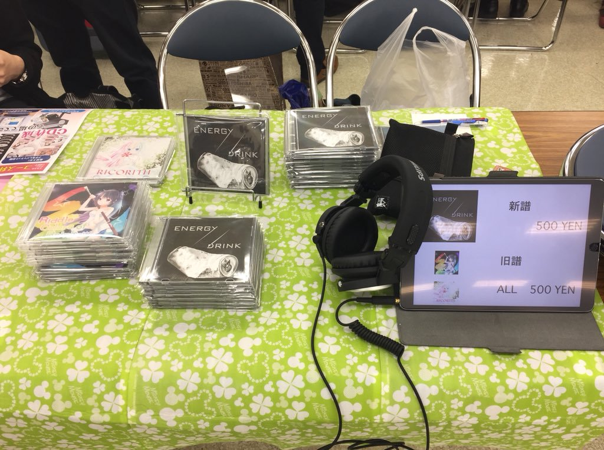
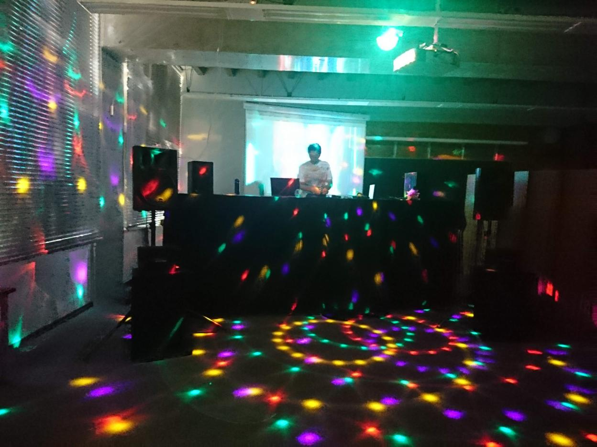

部会
RICORA MUSIC TEAMにおける基本的な活動です。毎週月曜日18:30から部会を行っています。
活動内容はDTM講習を主とし、他にリレー作曲、好きな曲の聴き合い、各種活動の打ち合わせ、部で出すアルバムのタイトル決めなどがあります。
音出し会
部会の中でも特に重要なのが、一ヶ月に一回程度の頻度で開かれる音出し会と呼ばれる回です。
各自作った曲を聴き合い、それについてコメントやアドバイスを送り合います。ツイッターで「#RICORA音出し会2019」などのタグで検索すると、過去の音出し会の様子が垣間見られます。
M3
M3は日本最大級の音系コンテンツの即売会です。音系のコミケとも呼ばれています。毎年4月及び10月の末に東京流通センターにて開催されています。
RICORA MUSIC TEAMでは毎回部員それぞれがオリジナル曲を作り、新しいアルバムを出しています。詳しくは「過去の作品」からご覧ください。
合宿
RICORA MUSIC TEAMでは毎年8月および3月頃にそれぞれ数日間ずつ合宿を行っています。理科大神楽坂キャンパスのかぐちょ、葛飾キャンパスのITCとの合同での開催であり、他の理科大のDTMサークルとの交流にもなっています。場所は茨城の大子研修センターや理科大野田キャンパスを使っています。
合宿では集中的に曲を作るだけでなく、音出し会をしたり、夜中は共にゲームで遊ぶなど、とても充実した日々を過ごすことが出来ます。また、一つの曲を複数人が順々にアレンジしていく編曲リレーも人気です（過去の作品例）。
理大祭でのDJ
東京理科大学野田キャンパスでは毎年11月に「理大祭」という学園祭を開きます。私たちはそこで毎年一つの教室を貸し切り、大きな音の出るスピーカーや踊るためのスペースを用意して、部員がDJとなって各々気に入った曲を流し、さも一つの教室をクラブのような空間に作り変えます。
DJをするかは任意ですが、自分の好きな曲を大音量で流して踊るのは中々体験出来ることではありません。